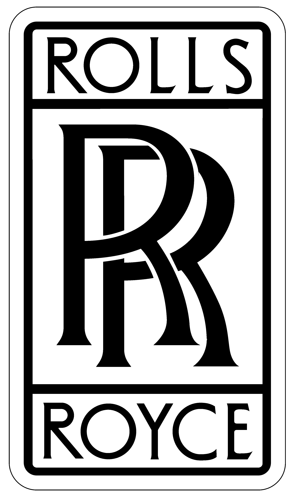
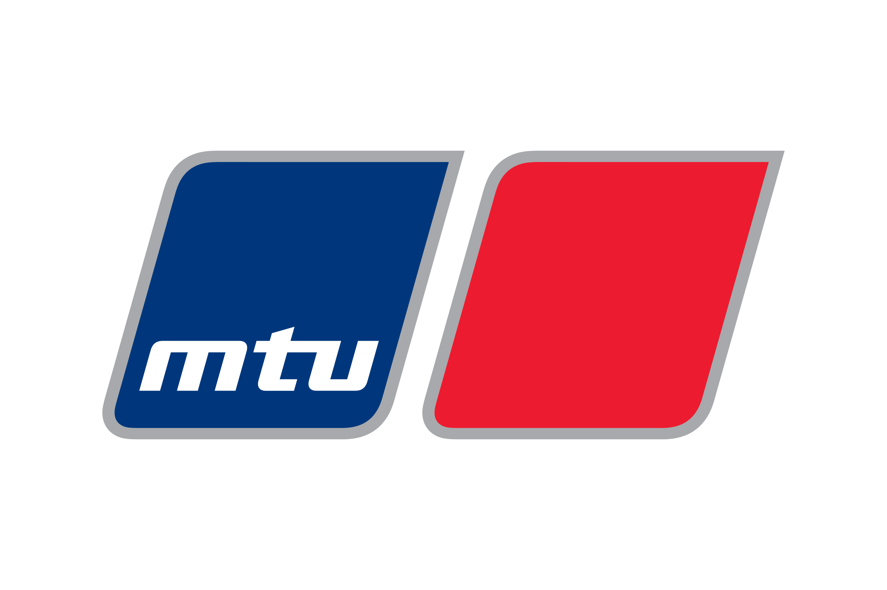

Dedicated Power House
Dedicated power building, located 460 feet away from Data Hall built as per TIER-IV TCOS and DCOS standard
Dedicated power building, located 460 feet away from Data Hall built as per TIER-IV TCOS and DCOS standard

Feed-A power is maintained by UPS backed by Diesel Generator. Diesel Generator is of MTU brand and manufactured by Rolls Royce 